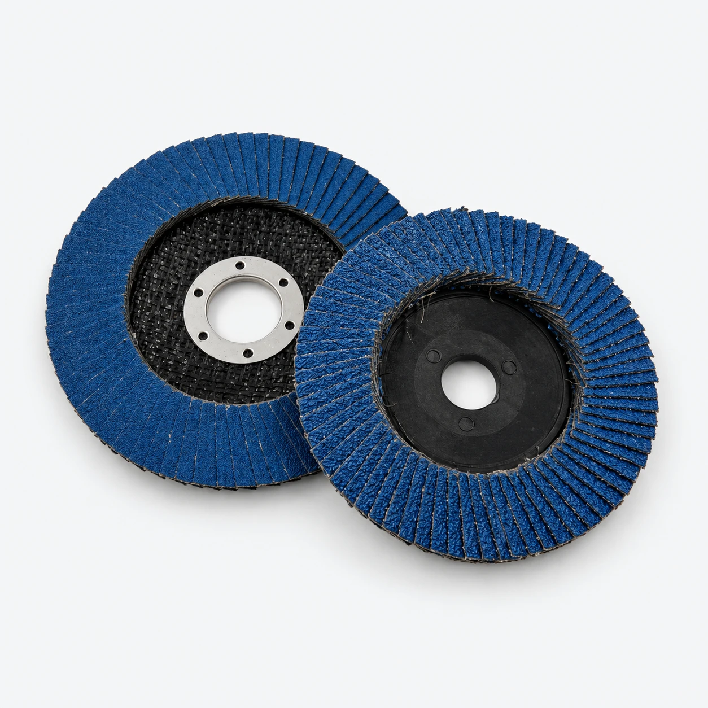

Discos de láminas abrasivas
Discos de láminas abrasivas superpuestas, también conocidos como discos flap. Para mayoreo, indica diámetro exterior, orificio, grano y tipo de abrasivo; no elijas solo por color.
Para importadores, distribuidores ferreteros y compradores industriales. Envíanos la configuración requerida para una cotización por modelo.
Ver especificaciones del catálogo original ↗Las imágenes muestran una serie; no garantizan todas las combinaciones. Confirma el modelo exacto antes de pedir.
Selecciona tu configuración
Selecciona una opción para cotizar. Confirma montaje y compatibilidad con Frank; la foto muestra la serie.
Elige una opción para ver sus datos.
Especificaciones y opciones de la serie
Configuración del producto
| Construcción | Láminas abrasivas superpuestas sobre un disco de soporte |
|---|---|
| Modelo / piezas por empaque | Consulta a Frank. |
| Confirmación de orificio, rosca o vástago | Consulta a Frank. |
| RPM máximas seguras | Consulta a Frank. |
| Compatibilidad con el equipo | Consulta a Frank. |
| Alcance de certificaciones | Consulta a Frank. |
Las medidas corresponden a la gama; la fotografía no representa todas las combinaciones. Confirma el modelo antes de ordenar.
Selección y compras para distribuidores
Qué confirmar antes de cotizar
Describe la pieza e indica si necesitas desbaste o acabado. El abrasivo, soporte, grano y RPM máximas quedan sujetos a confirmación para el modelo elegido.
Pedidos de mayoreo y empaque OEM
Para ferreterías, distribuidores e importadores en México: envía cantidades por modelo, ciudad o puerto de destino y requisitos de empaque. Cotizamos después de confirmar la configuración.
Prepara tu consulta
Estas son las especificaciones que solicitas, sujetas a confirmación de fábrica. Este sitio no cobra pagos.
Pedidos a la medida de tu negocio
Aceptamos pedidos pequeños de prueba sin empaque personalizado. No aplican precios de mayoreo y el flete por pieza es mayor en envíos pequeños.
Para empaque personalizado, se exenta el cargo de RMB 300 por placa de impresión en pedidos de 5,000 piezas en total, con 2–4 modelos combinados en una misma plancha. Confirma el diseño y la distribución por modelo antes de producir.
EXW / FOB / CIF. Cotizamos productos, flete y fechas de despacho después de confirmar especificaciones, cantidad y destino.